Kapital 10 Principal component analysis (PCA)
“At lære datalogi er som at lære at stå på ski. Man er nødt til at gøre det.” – Claudia Perlich
10.1 Indledning og læringsmålene
10.1.1 Læringsmålene
Du skal være i stand til at
- Forstå koncepten bag principal component analysis (PCA)
- Benytte PCA i R og lave et plot af et datasæt i to dimensioner
- Vurdere den relative varians forklarede af de forskellige components
- Anvende PCA til at vurdere variablernes bidrag til de principal components
- Se dagens forelæsning om Broom-pakken
- Se videoerne
- Læs 10.4.3 - lidt ekstra tekst om fortolkingen af rotation matrix
- Lav Quiz - Emne 10: PCA
- Lav problemstillingerne
Næste lektion: Workshop 4 om clustering og principal component analyse
10.1.2 Introduktion til kapitlet
Principal component analysis (PCA) er en meget populær og ofte brugt statistisk metode inden for biologi. PCA er en metode til dimensionreduktion: den omdanner et datasæt med mange (ofte korrelerede) variabler til et nyt sæt ortogonale (indbyrdes uafhængige) akser kaldet hovedkomponenter (“principal components”, PC1–PCN, hvor N er antallet af variabler). Oftest fokuserer vi på de to første hovedkomponenter:
- PC1 er den retning i data, der forklarer mest mulig variation (varians).
- PC2 er den retning, der forklarer mest mulig af den resterende variation, som ikke allerede er forklaret af PC1, og den står vinkelret på PC1.
Ved at vælge de første komponenter (ofte 2 eller 3) kan vi beskrive data i færre dimensioner, men stadig bevare så meget af den samlede variation som muligt. PCA bruges bl.a. til:
- Visualisering af høj-dimensionelle data i 2 eller 3 dimensioner.
- At afsløre redundans, dvs. variabler der i høj grad “måler det samme” (høj korrelation).
- Forberedelse til videre analyse, hvor det er praktisk at arbejde med uafhængige akser i stedet for mange korrelerede variabler.
I biologi bruges PCA typisk til at visualisere, om kontrol- og behandlingsprøver (eller andre grupper) adskiller sig, og til at opdage mønstre eller batch-effekter, der ellers kan være svære at se.
10.1.3 Videoressourcer
- Video 1 - hvad er PCA?
** Du kan beskrive en dataframe med mange dimensionerne i færre dimensioner. ** Du kan bruge den til at lave et plot med to dimensioner, der indfanger oplysning fra samtlige variabler i dataframen.
- Video 2 - hvordan man lave PCA i R og få output i tidy form
- Video 3 - hvordan man visualiserer de data (principal components, rotation matrix)
- Efter videoer - lidt ekstra læsning i 10.4.3 (bidragende af de forskellige variabler)
10.2 Hvad er principal component analysis (PCA)?
10.2.1 Problemet med høj-dimensionelle plots
I sidste lektion arbejdede vi med penguins, hvor vi så, at der faktisk var fire numeriske variabler - altså fire dimensioner - som blev brugt til at lave k-means clustering.
library(palmerpenguins)
penguins <- penguins %>%
drop_na() %>%
mutate(year=as.factor(year))
penguins %>% select(where(is.numeric)) %>% head()## # A tibble: 6 × 4
## bill_length_mm bill_depth_mm flipper_length_mm body_mass_g
## <dbl> <dbl> <int> <int>
## 1 39.1 18.7 181 3750
## 2 39.5 17.4 186 3800
## 3 40.3 18 195 3250
## 4 36.7 19.3 193 3450
## 5 39.3 20.6 190 3650
## 6 38.9 17.8 181 3625Når man laver et punkt plot for at vise de forskellige clusters, som er beregnet fra alle numeriske variabler, får man et problem - nemlig hvilke to variabler skal plottes? Man kan plotte hver eneste par af variabler. For eksempel kan man prøve en pakke, der hedder GGally, som automatisk kan plotte de forskellige par af numeriske variabler og beregner korrelationen mellem variablerne.
## Loading required package: GGallypenguins %>%
ggscatmat(columns = 3:6 ,color = "species", corMethod = "pearson") +
scale_color_brewer(palette = "Set2") +
theme_bw()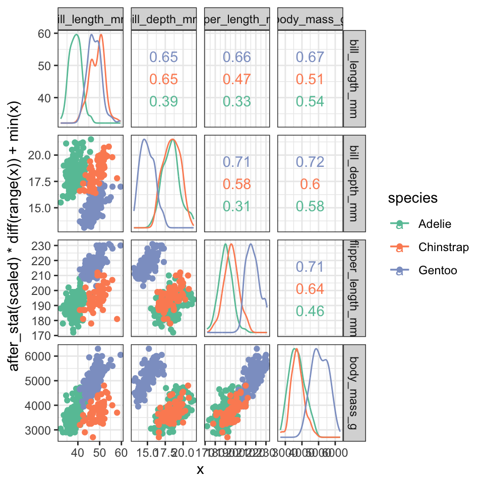
Men denne løsning bliver hurtigt uoverskuelige for mange variabler.
10.2.2 Idéen bag PCA: Projektion på nye akser
Vi ønsker at beregne en ny variabel (PC1), som kan plottes på x-aksen og som bedst fanger den samlede variation i hele datasættet ved at maksimere den projicerede varians. Teknisk set finder man PC1 ved at danne kovarians- eller korrelationsmatrixen og vælge den egenvektor, der svarer til den største egenværdi, fordi netop den retning maksimerer variansen i projektionen. Vi bruger en funktion i R til at udføre PCA, men nogle nøgleord, som er nyttige at huske, er:
- Centering og scaling: PCA kræver typisk, at de numeriske variabler er skaleret.
- Eigenvalues: Fortæller, hvor meget varians hver component fanger.
- Eigenvectors (loadings): Angiver, hvordan de oprindelige variabler kombineres til at danne komponenten.
10.2.3 Simpelt eksempel med to dimensioner
Man kan forsøge at forstå, hvordan PCA fungerer, ved at kigge på et simpelt eksempel med 2 dimensioner:
#simulerer data med en høj korrelation
a <- rnorm(250,1,2)
b <- a + rnorm(250,0,.5)
df <- tibble(a,b)
ggplot(df,aes(a,b)) +
geom_point() +
theme_minimal()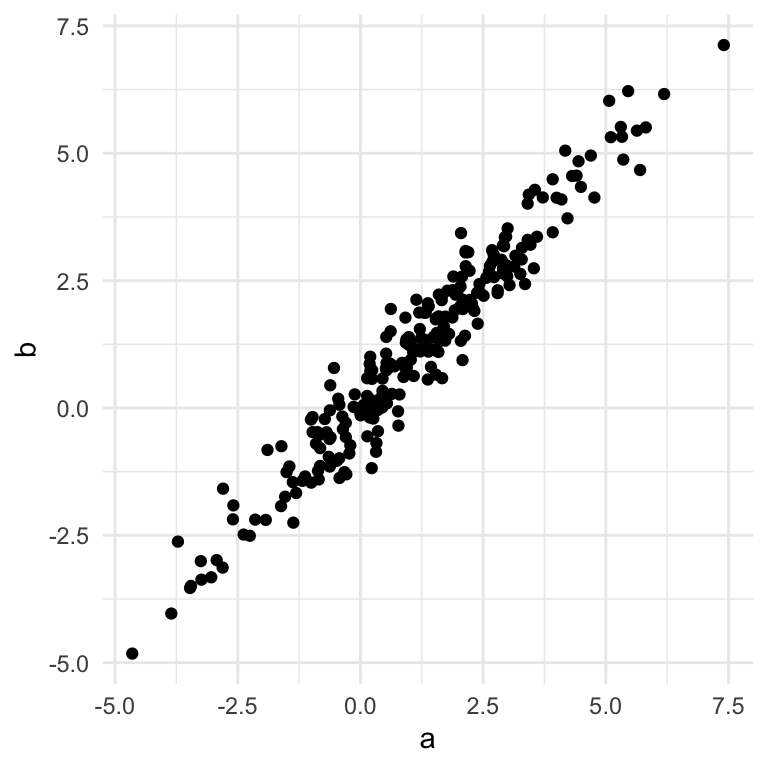
Vi kan se her, at der er en meget stor korrelation mellem a og b. Selvom datasættet er plottet i 2 dimensioner, kan det næsten forklares af én linje - en såkaldt bedste rette linje, der passer bedst gennem punkterne.
df <- tibble(a,b)
ggplot(df,aes(a,b)) +
geom_point() +
theme_minimal() +
geom_smooth(method="lm",se=FALSE)## `geom_smooth()` using formula = 'y
## ~ x'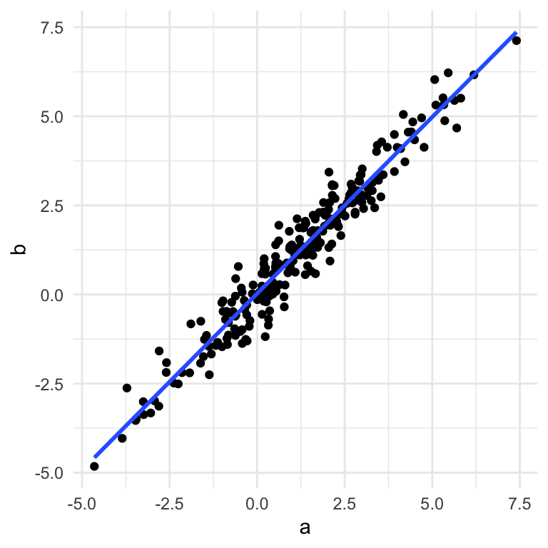
Lineær regression (geom_smooth(method="lm")) illustrerer, at dataene næsten kan beskrives på én linje. Den bedste linje gennem punkterne svarer til PC1, og PC2 findes som en ortogonal linje, der fanger den resterende varians. Vi kan se her PC1 og PC2 plottet:
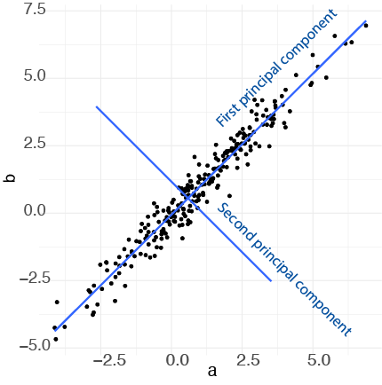
Når vi tager PC1 og PC2 og plotter dem som henholdsvis x-aksen og y-aksen, svarer det til en drejning af akserne i plottet (vi finder PC1 og PC2 fra funktionen prcomp, som jeg forklarer i næste sektion):
dat <- augment(prcomp(df),df)
ggplot(dat,aes(x=.fittedPC1,y=.fittedPC2)) +
geom_point() +
theme_minimal() +
geom_smooth(method="lm")## `geom_smooth()` using formula = 'y
## ~ x'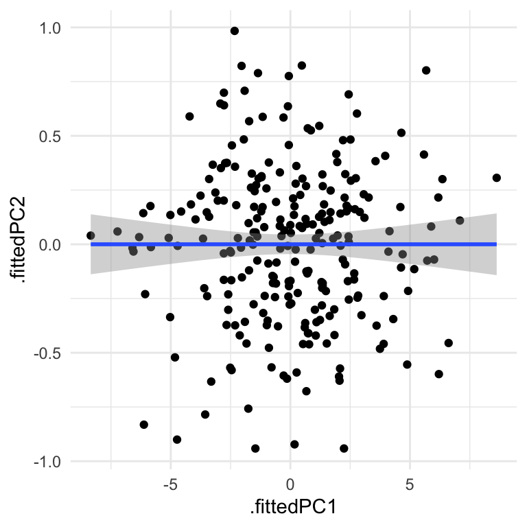
Vi kan se her, at dataene fylder pladsen på plottet bedre end før (og bemærk at akseskalaen er blevet meget mindre på den nye y-akse, da dataene spreder sig meget mindre langs PC2 i forhold til PC1.)
Dette er kun et eksempel, hvor vores oprindelige data ligger i to dimensioner (to variabler), for at gøre det nemt at visualisere dem i et plot, men de fleste datasæt (fx penguins, iris osv.) har flere end to dimensioner. Vi kan godt lave den samme proces, hvor vi definerer PC1, som forklarer så meget af variansen i dataene som muligt, og dernæst PC2, som forklarer noget af variansen, der ikke blev fanget af PC1, og dernæst PC3 osv., alt efter hvor mange dimensioner dataene har. I mange praktiske situationer vælger man de første to komponenter, som er de vigtigste, da de forklarer mest af variansen i dataene i forhold til de andre komponenter.
“So to sum up, the idea of PCA is simple — reduce the number of variables of a data set, while preserving as much information as possible.” https://builtin.com/data-science/step-step-explanation-principal-component-analysis
10.3 Fit PCA to data in R med prcomp()
Lad os skifte tilbage til nogle virkelige data for at benytte prcomp: datasættet penguins. Med prcomp() fokuserer vi kun på numeriske variabler, så vi bruger select med where(is.numeric) og anvender derefter skalering ved at specificere scale = TRUE inde i funktionen prcomp.
pca_fit <- penguins %>%
select(where(is.numeric)) %>% # behold kun numeriske kolonner
prcomp(scale = TRUE) # udfør PCA på skaleret data
summary(pca_fit)## Importance of components:
## PC1 PC2 PC3 PC4
## Standard deviation 1.6569 0.8821 0.60716 0.32846
## Proportion of Variance 0.6863 0.1945 0.09216 0.02697
## Cumulative Proportion 0.6863 0.8809 0.97303 1.00000Proportion of Variance indikerer, hvor meget af variansen i dataene, der blev forklaret af de forskellige komponenter. Vi kan se, at PC1 forklarer omkring 69% og de første to komponenter sammen forklarer 88% af variansen i dataene. Derfor, hvis vi viser et plot af de første to komponenter, ved vi, at vi har fanget rigtig mange oplysninger om de fire variabler i datasættet.
10.4 Integrering af PCA-resultater med broom-pakken
Der er flere ting, som kan være nyttige at gøre med vores PCA-resultater:
- Lave et plot af datasættet ud fra de første to principal components
- Se, hvor meget af variansen i datasættet der er forklaret af de forskellige komponenter
- Bruge rotationsmatricen til at se, hvordan variablerne forholder sig i forhold til hinanden
10.4.1 Lave plot af principal componenets
For at lave vores plot af principal components kan vi benytte funktionen augment(), ligesom vi gjorde i vores sidste lektion med k-means clustering. Her får vi værdierne for hver af de fire principal components sammen med det oprindelige datasæt.
pca_fit_augment <- pca_fit %>%
augment(penguins) # tilføj det originale datasæt igen
pca_fit_augment## # A tibble: 333 × 13
## .rownames species island bill_length_mm bill_depth_mm flipper_length_mm
## <chr> <fct> <fct> <dbl> <dbl> <int>
## 1 1 Adelie Torgersen 39.1 18.7 181
## 2 2 Adelie Torgersen 39.5 17.4 186
## 3 3 Adelie Torgersen 40.3 18 195
## 4 4 Adelie Torgersen 36.7 19.3 193
## 5 5 Adelie Torgersen 39.3 20.6 190
## 6 6 Adelie Torgersen 38.9 17.8 181
## 7 7 Adelie Torgersen 39.2 19.6 195
## 8 8 Adelie Torgersen 41.1 17.6 182
## 9 9 Adelie Torgersen 38.6 21.2 191
## 10 10 Adelie Torgersen 34.6 21.1 198
## # ℹ 323 more rows
## # ℹ 7 more variables: body_mass_g <int>, sex <fct>, year <fct>,
## # .fittedPC1 <dbl>, .fittedPC2 <dbl>, .fittedPC3 <dbl>, .fittedPC4 <dbl>Vi kan tage pca_fit_augment og lave et plot af de første to principal components:
pca_fit_augment %>%
ggplot(aes(x=.fittedPC1, y=.fittedPC2, color = species)) +
geom_point() +
theme_bw()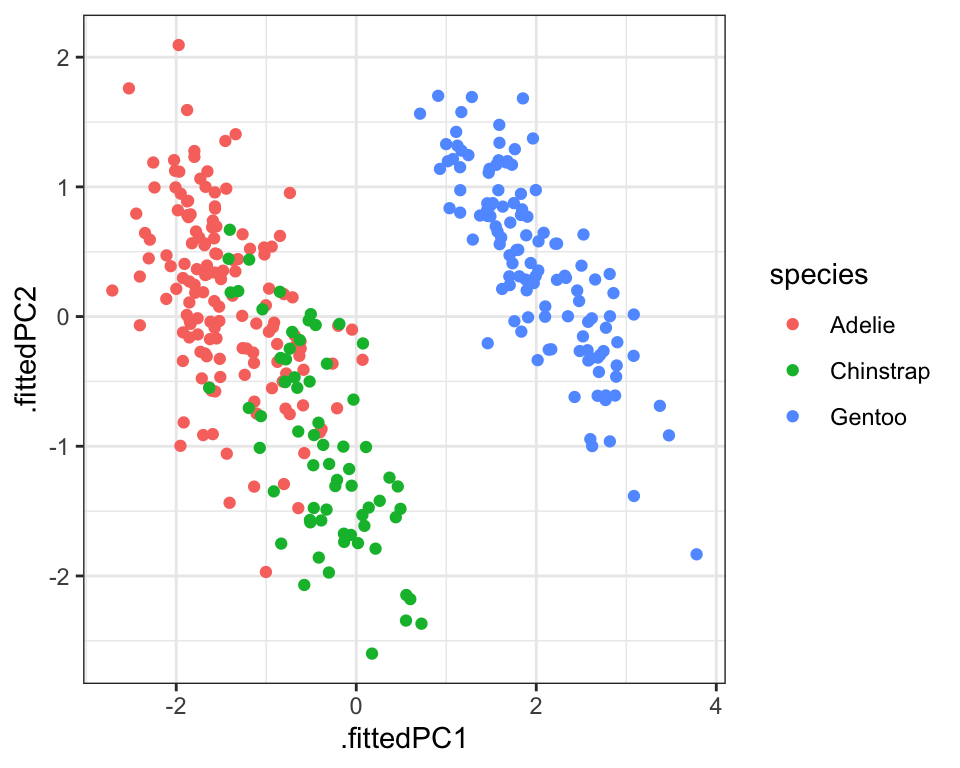
Vi kan også integrere de clusters, som vi fik fra funktionen kmeans(), i vores PCA ved at anvende funktionen augment() på resultaterne fra kmeans og vores data, som allerede har resultaterne fra pca. Da både PCA og k-means fanger oplysninger om datastrukturen baseret på de fire numeriske variabler, kan man forvente en bedre sammenligning mellem de to (i forhold til at sammenligne clusters med et plot med kun to af variablerne).
penguins_scaled <- penguins %>% select(where(is.numeric)) %>% scale
kclust <- kmeans(penguins_scaled,centers = 3)
kclust %>% augment(pca_fit_augment) %>%
ggplot(aes(x=.fittedPC1, y=.fittedPC2, color = .cluster)) +
geom_point() +
theme_bw()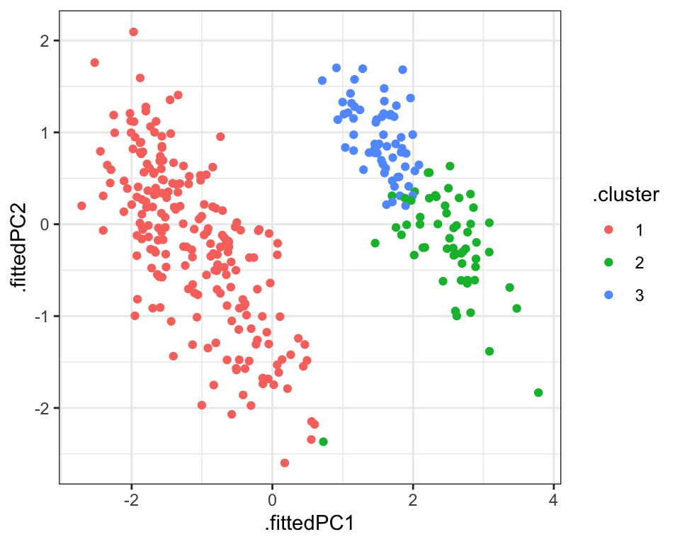
10.4.2 Forklarede variance
Næst vil vi se på variansen i datasættet, som er blevet fanget af hver af de forskellige komponenter. Man kan udtrække oplysningerne ved at benytte funktionen tidy() fra pakken broom og ved at angive matrix = "eigenvalues" inden for tidy.
Det kaldes “eigenvalues”, fordi hvis man kigger på matematikken bag principal component analysis, tager man udgangspunkt i en covariance matrix. En covariance matrix beskriver sammenhængen eller korrelationen mellem de forskellige variabler. Man bruger denne covariance matrix til at beregne de såkaldte eigenvalues og deres tilsvarende eigenvectors.
Det er faktisk den største eigenvalue, der fortæller os om den første principal component - det fortæller os, hvor meget af variansen i datasættet den første principal component fanger - jo større den er i forhold til de andre eigenvalues, jo mere af variansen kan man forklare med den første principal component. Og den næststørste fortæller os om den anden principal component og så videre.
## # A tibble: 4 × 4
## PC std.dev percent cumulative
## <dbl> <dbl> <dbl> <dbl>
## 1 1 1.66 0.686 0.686
## 2 2 0.882 0.195 0.881
## 3 3 0.607 0.0922 0.973
## 4 4 0.328 0.0270 1Lad os visualisere disse tal som procenttal ved at specificere labels = scales::percent_format() inden for scale_y_continuous - så vi bare ændrer på de tal, der kan ses på y-aksen.
pca_fit_tidy %>%
ggplot(aes(x = PC, y = percent)) +
geom_bar(stat="identity", fill="steelblue") +
scale_y_continuous(
labels = scales::percent_format(), #omdann labels til procentformat
) +
theme_minimal()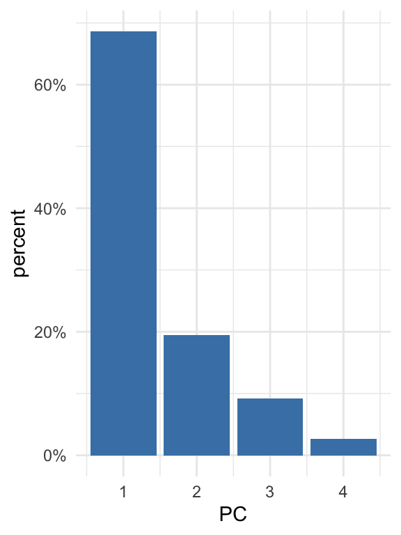
På den ene side, hvis der er meget varians, der er forklaret af de første komponenter tilsammen, betyder det, at der er en del redundans i datasættet, fordi mange af variablerne har en tæt sammenhæng med hinanden. På den anden side, hvis der er en meget lille andel af variansen, der er forklaret af de første komponenter tilsammen, betyder det, at det er svært at beskrive datasættet i færre dimensioner (fordi der næsten ingen sammenhæng er mellem variablerne) - i dette tilfælde, hvor datasættet er mere komplekst, er PCA mindre effektiv.
10.4.3 Rotationsmatrix: bidragene fra de forskellige variabler
Eigenvalues kan anvendes til at undersøge variansen i datasættet, men deres tilsvarende eigenvectors fortæller os om, hvordan de forskellige variabler kombineres for at opnå de endelige principal component værdier, som vi fx bruger i et scatter plot. Eigenvectors bruges til at lave en matrix, der kaldes en ‘rotationsmatrix’.
Jeg anvender funktionen pivot_wider for at gøre vores matrix mere overskuelig at se på. Vi kan se, at vi har variablerne her på rækkerne og de forskellige principal components i kolonnerne.
pca_fit_rotate <- pca_fit %>%
tidy(matrix = "rotation") %>%
pivot_wider(names_from = "PC", names_prefix = "PC", values_from = "value")
pca_fit_rotate## # A tibble: 4 × 5
## column PC1 PC2 PC3 PC4
## <chr> <dbl> <dbl> <dbl> <dbl>
## 1 bill_length_mm 0.454 -0.600 -0.642 0.145
## 2 bill_depth_mm -0.399 -0.796 0.426 -0.160
## 3 flipper_length_mm 0.577 -0.00579 0.236 -0.782
## 4 body_mass_g 0.550 -0.0765 0.592 0.585Denne rotationsmatrix fortæller os, hvordan man beregner værdierne for de principal components for alle observationer. For eksempel tager vi vores første observation, beregner 0.45 gange bill length, og så minus 0.4 gange bill depth, og så plus 0.58 x flipper length og så plus 0.55 x body_mass. Og så har vi værdien for observationen langs den første principal component.
Man kan lave et plot af hver af de principal components, der viser, hvordan hvert variable bidrage til componentens værdier:
pca_fit %>%
tidy(matrix = "rotation") %>%
ggplot(aes(value, column,fill=as.factor(PC))) +
geom_col() +
facet_wrap(~PC,ncol=1) +
theme_bw() +
xlab("Contribution to principal component") +
ylab("Variable") +
ggtitle("Rotation matrix values") +
scale_fill_brewer(palette="Set1")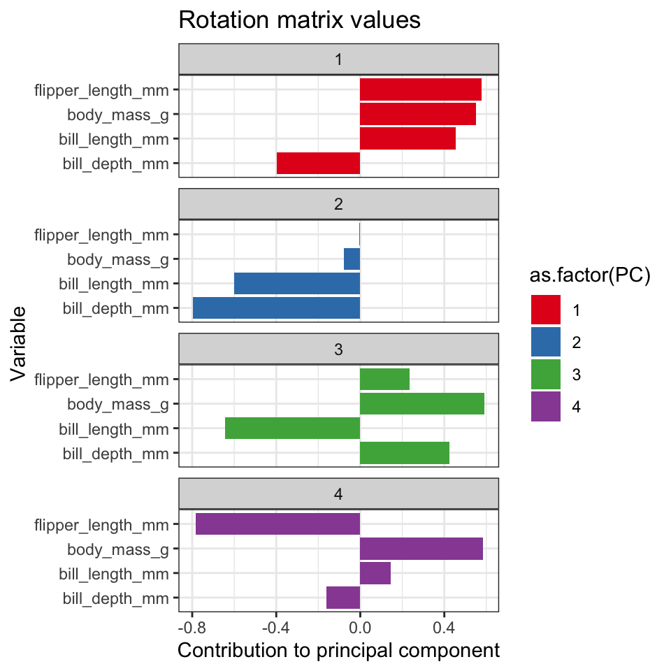
Her er eksempelvis to fortolkinger ud fra ovenstående plot:
- Pingviner med en større flipper length ville være plottet på højre på den første principal component, men til venstre hvis man plotter din 4. principal componoent.
- Pingviner med en store bill_depth ville være plottet på venstre på både den første principal compenent og den anden principal component.
Vi kan anvende rotationsmatrixen til at se, hvordan de forskellige variabler relaterer til hinanden. Variabler, der er tæt på hinanden i plottet, ligner hinanden. Vi kan se, at flipper_length_mm og body_mass_g ligner hinanden ret meget i vores datasæt, mens bill_depth_mm befinder sig over til venstre langs den første principal component, hvilket indikerer, at den måske indeholder nogle oplysninger om pingvinerne, der ikke kunne fanges i de andre variabler.
library(ggrepel)
pca_fit_rotate %>%
ggplot(aes(x=PC1,y=PC2,colour=column)) +
geom_point(size=3) +
geom_text_repel(aes(label=column)) +
theme_minimal()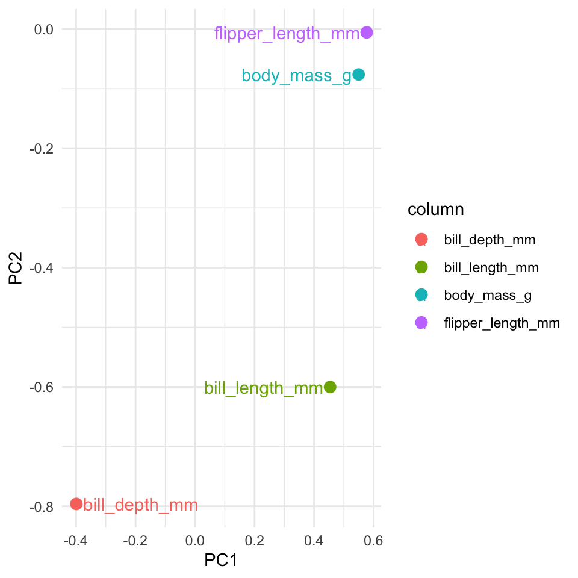
10.4.4 Pakken factoextra
R-pakken factoextra kan anvendes til automatisk at lave et lignende plot fra rotationsmatrixen, og den arbejder oven på ggplot2, så man kan ændre temaet osv. Du kan se, hvordan det fungerer i følgende kode.
- Man får variansprocenten på akserne.
- Placeringen af pilhovederne kommer fra rotationsmatrixen.
- Jo mindre vinklen mellem to linjer er, og jo tættere de er på hinanden, jo større er sammenhængen mellem de to variable.
- Jo tættere pilhovederne er på cirklen, desto større indflydelse har den pågældende variabel på de principal components.
FALSE Warning: Using `size` aesthetic for lines
FALSE was deprecated in ggplot2 3.4.0.
FALSE ℹ Please use `linewidth` instead.
FALSE ℹ The deprecated feature was
FALSE likely used in the ggpubr
FALSE package.
FALSE Please report the issue at
FALSE <https://github.com/kassambara/ggpubr/issues>.
FALSE This warning is displayed once
FALSE every 8 hours.
FALSE Call
FALSE `lifecycle::last_lifecycle_warnings()`
FALSE to see where this warning was
FALSE generated.FALSE Warning: `aes_string()` was deprecated in
FALSE ggplot2 3.0.0.
FALSE ℹ Please use tidy evaluation
FALSE idioms with `aes()`.
FALSE ℹ See also
FALSE `vignette("ggplot2-in-packages")`
FALSE for more information.
FALSE ℹ The deprecated feature was
FALSE likely used in the factoextra
FALSE package.
FALSE Please report the issue at
FALSE <https://github.com/kassambara/factoextra/issues>.
FALSE This warning is displayed once
FALSE every 8 hours.
FALSE Call
FALSE `lifecycle::last_lifecycle_warnings()`
FALSE to see where this warning was
FALSE generated.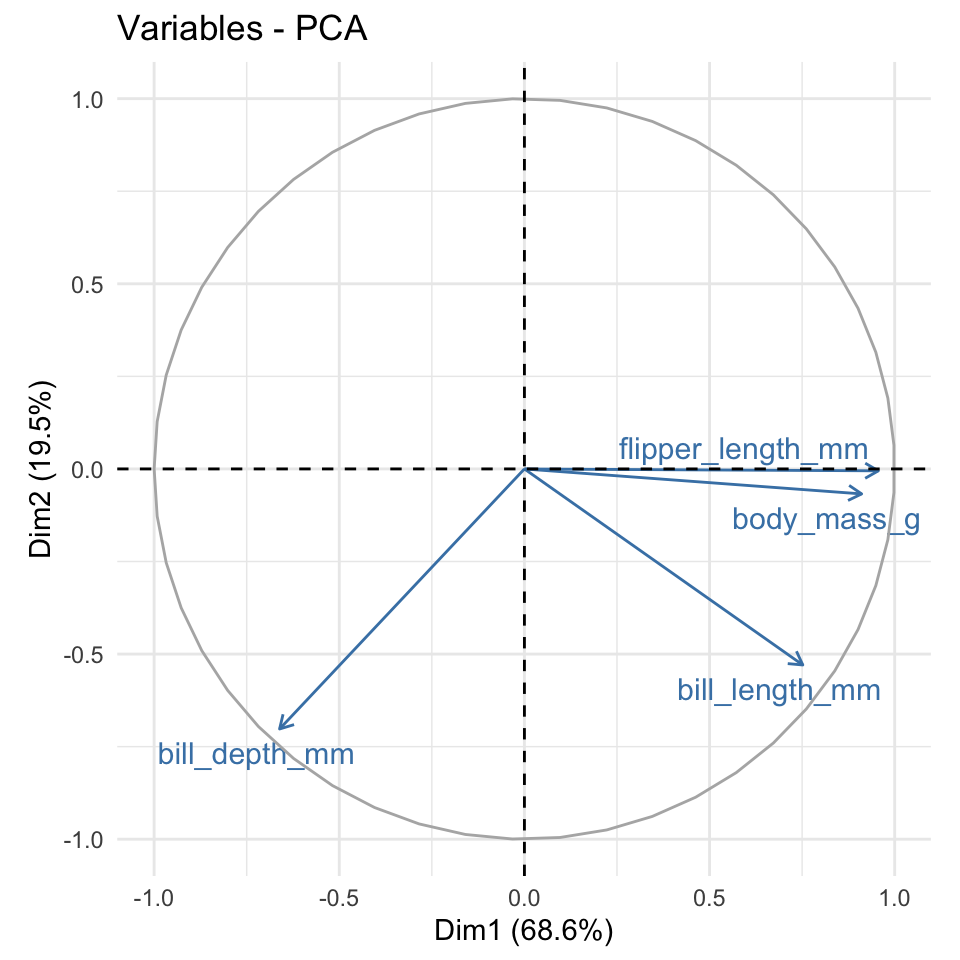
10.5 Problemstillinger
Problem 1) Quiz på Absalon
Vi arbejder med en breast cancer datasæt. Here is the description from Kaggle https://www.kaggle.com/datasets/yasserh/breast-cancer-dataset:
- Breast cancer is the most common cancer amongst women in the world. It accounts for 25% of all cancer cases, and affected over 2.1 Million people in 2015 alone. It starts when cells in the breast begin to grow out of control. These cells usually form tumors that can be seen via X-ray or felt as lumps in the breast area.
- The key challenges against it’s detection is how to classify tumors into malignant (cancerous) or benign(non cancerous)_
Download følgende datasæt ved at køre følgende kode chunk:
cancer <- read.csv(url("https://www.dropbox.com/s/4qa37itw9wtwtjg/breast-cancer.csv?dl=1")) %>% as_tibble() %>% select(-id)
cancer %>% glimpse()## Rows: 569
## Columns: 31
## $ diagnosis <chr> "M", "M", "M", "M", "M", "M", "M", "M", "M", "…
## $ radius_mean <dbl> 17.990, 20.570, 19.690, 11.420, 20.290, 12.450…
## $ texture_mean <dbl> 10.38, 17.77, 21.25, 20.38, 14.34, 15.70, 19.9…
## $ perimeter_mean <dbl> 122.80, 132.90, 130.00, 77.58, 135.10, 82.57, …
## $ area_mean <dbl> 1001.0, 1326.0, 1203.0, 386.1, 1297.0, 477.1, …
## $ smoothness_mean <dbl> 0.11840, 0.08474, 0.10960, 0.14250, 0.10030, 0…
## $ compactness_mean <dbl> 0.27760, 0.07864, 0.15990, 0.28390, 0.13280, 0…
## $ concavity_mean <dbl> 0.30010, 0.08690, 0.19740, 0.24140, 0.19800, 0…
## $ concave.points_mean <dbl> 0.14710, 0.07017, 0.12790, 0.10520, 0.10430, 0…
## $ symmetry_mean <dbl> 0.2419, 0.1812, 0.2069, 0.2597, 0.1809, 0.2087…
## $ fractal_dimension_mean <dbl> 0.07871, 0.05667, 0.05999, 0.09744, 0.05883, 0…
## $ radius_se <dbl> 1.0950, 0.5435, 0.7456, 0.4956, 0.7572, 0.3345…
## $ texture_se <dbl> 0.9053, 0.7339, 0.7869, 1.1560, 0.7813, 0.8902…
## $ perimeter_se <dbl> 8.589, 3.398, 4.585, 3.445, 5.438, 2.217, 3.18…
## $ area_se <dbl> 153.40, 74.08, 94.03, 27.23, 94.44, 27.19, 53.…
## $ smoothness_se <dbl> 0.006399, 0.005225, 0.006150, 0.009110, 0.0114…
## $ compactness_se <dbl> 0.049040, 0.013080, 0.040060, 0.074580, 0.0246…
## $ concavity_se <dbl> 0.05373, 0.01860, 0.03832, 0.05661, 0.05688, 0…
## $ concave.points_se <dbl> 0.015870, 0.013400, 0.020580, 0.018670, 0.0188…
## $ symmetry_se <dbl> 0.03003, 0.01389, 0.02250, 0.05963, 0.01756, 0…
## $ fractal_dimension_se <dbl> 0.006193, 0.003532, 0.004571, 0.009208, 0.0051…
## $ radius_worst <dbl> 25.38, 24.99, 23.57, 14.91, 22.54, 15.47, 22.8…
## $ texture_worst <dbl> 17.33, 23.41, 25.53, 26.50, 16.67, 23.75, 27.6…
## $ perimeter_worst <dbl> 184.60, 158.80, 152.50, 98.87, 152.20, 103.40,…
## $ area_worst <dbl> 2019.0, 1956.0, 1709.0, 567.7, 1575.0, 741.6, …
## $ smoothness_worst <dbl> 0.1622, 0.1238, 0.1444, 0.2098, 0.1374, 0.1791…
## $ compactness_worst <dbl> 0.6656, 0.1866, 0.4245, 0.8663, 0.2050, 0.5249…
## $ concavity_worst <dbl> 0.71190, 0.24160, 0.45040, 0.68690, 0.40000, 0…
## $ concave.points_worst <dbl> 0.26540, 0.18600, 0.24300, 0.25750, 0.16250, 0…
## $ symmetry_worst <dbl> 0.4601, 0.2750, 0.3613, 0.6638, 0.2364, 0.3985…
## $ fractal_dimension_worst <dbl> 0.11890, 0.08902, 0.08758, 0.17300, 0.07678, 0…I variablen diagnosis: M betyder ‘Malignant’ og B betyder ‘Benign’ - du kan overveje at ændre på variablen i dit indlæste datasæt for at gøre det mere klart.
Problem 2) Først vil vi gerne visualisere datasættet uden at bruge principal component analyse. Anvend funktionen ggscatmat fra pakken GGally til at lave et plot, hvor man sammenligne fem af variablerne.
- Der er mange variabler, derfor kan man angive en tilfældig sample af fem variabler med
columns = sample(2:31,5)som parameter indenfor funktionenggscatmat(husk at installere og indlæseGGally-pakken). - Giv farver efter factor variablen
diagnosisog vælger “pearson” som parameterencorMethod. - Prøv at køre din kode et par gange, så du får forskellige samplings af fem variabler. Opfatter du, at der er en del redundans i datasættet (dvs., er der stærke korrelationer mellem de forskellige variabler, der gør at hvis man ved en værdi fra den ene, kan man gætte på den tilsvarende værdi fra den anden)?
Problem 3) Benyt funktionen prcomp() til at beregne en principal component analysis af datasættet:
- Husk at det skal kun være numeriske variabler og angiv
scale=TRUEinde i funktionen.
- Husk at det skal kun være numeriske variabler og angiv
- Anvend
augment()-funktionen til at tilføje dit rå datasæt til ovenstående resultater fraprcomp.
- Anvend
- Brug den til at lave et scatter plot af de første to principal components, hvor du giver farver efter variablen
diagnosis
- Brug den til at lave et scatter plot af de første to principal components, hvor du giver farver efter variablen
- Skriv kort om man kan skelne imellem Malignant og Benign tumours (variablen
diagnosis) ud fra de første to principal components.
- Skriv kort om man kan skelne imellem Malignant og Benign tumours (variablen
- Skriv også kort - hvilke af de to components er bedre til at skelne mellem Malignant og Benign tumours?
Problem 4) Integrere kmeans clustering. Lav et clustering med kmeans på datasættet, med to clusters (husk at udvælge numeriske variabler og scale inden du anvender funktionen kmeans), og:
- Augment resultaterne af
kmeanstil dit datasæt, der allerede harprcompresultater tilføjet.
- Augment resultaterne af
- Lav et plot og give farver efter
.clusterog former efterdiagnosis.
- Lav et plot og give farver efter
- Sammenligne dine to clusters med
diagnosis.
- Sammenligne dine to clusters med
Problem 5) tidy form og variansen Anvende tidy(matrix = "eigenvalues") på din PCA resultater til at få bidragen af de forskellige components til den overordnet varianse i datasættet.
- Lav et barplot som viser de components på x-aksen og
percentpå y-aksen.
Problem 6) tidy form og rotation matrix
a) Anvende tidy(matrix = "rotation") til at få den rotation matrix og lav følgende:
- Anvend funktionen
pivot_widertil at få den til wide form - Lav et scatter plot som viser bidragerne af de forskellige variabler på den første og den anden principal components
- Anvend
geom_text_repeltil at give labels til de variabler (kan være en god idé at anvendshow.legend=F)
b) Værdierne i den rotation matrix fortæller, hvordan en givet variabel bidrager til den endelige principal component beregning (dvs. værdierne som er plottet i Problem 4). Fk. variablen radius_mean har en positiv værdi i PC2, som gøre, at en højere værdi af radius_mean vil resultatere i en højere værdi på PC2 for en givet observation.
- Kig på placeringen af variablen
compactness_meanpå plottet. Bidrager den negativ eller positiv værdi til PC1? - Kig igen på dit plot i Problem 4) - hvad effekt ville en forhøjet værdi af
compactness_meanhave på den PC1-værdien til en givet tumour? Ville det gøre det mindre eller mere sandsynligt, at den er “benign”?
Problem 7) Udvidelse af Problem 4): Fra din augmented resultater med både dine principal components og clusters: Beregne middelværdierne af din første to principal components for hver af de to clusters. Tilføj dine beregnede middelværdierne til plottet som “x”.
Åbn “world happiness data” og
happiness <- read_csv("https://www.dropbox.com/scl/fi/6rt17anzk31mjyexm16o6/world_happiness_data.csv?rlkey=44qxe2voahqvaxnxlgy01i2ls&dl=1")## Rows: 146 Columns: 7
## ── Column specification ───────────
## Delimiter: ","
## chr (1): Country
## dbl (6): GDP per capita, Social support, Healthy life expectancy, Freedom of...
##
## ℹ Use `spec()` to retrieve the full column specification for this data.
## ℹ Specify the column types or set `show_col_types = FALSE` to quiet this message.## Rows: 146
## Columns: 7
## $ Country <chr> "Finland", "Denmark", "Iceland", "Switzerlan…
## $ `GDP per capita` <dbl> 1.892, 1.953, 1.936, 2.026, 1.945, 2.209, 1.…
## $ `Social support` <dbl> 1.258, 1.243, 1.320, 1.226, 1.206, 1.155, 1.…
## $ `Healthy life expectancy` <dbl> 0.775, 0.777, 0.803, 0.822, 0.787, 0.790, 0.…
## $ `Freedom of life choices` <dbl> 0.736, 0.719, 0.718, 0.677, 0.651, 0.700, 0.…
## $ Generosity <dbl> 0.109, 0.188, 0.270, 0.147, 0.271, 0.120, 0.…
## $ `Corruption perception` <dbl> 0.534, 0.532, 0.191, 0.461, 0.419, 0.388, 0.…Problem 8) Lav en principal component analyse på dataframen happiness:
- Lav et scatter plot af de first to principal components
- Giv hvert punkt sin egen label efter
Country
Problem 9) Lav barplots der viser bidragene af variablerne til hvert component og angiv en foltolking til en af variablerne.
Problem 10) Har lande med et “Generosity” af mere end 0.15 signifikant højere værdier på den anden principal component?
- Opret en kolon,
is_generousmed dine to grupper (“Yes” hvisGenerosity> 0.15 og “No” hvis ikke).
- Opret en kolon,
- Plotte de “generøs” lande med egen farve på din punkt plot, der viser de første to principal componenter.
- Lav en passende test for at svarer på ovenstående spørgsmålet
Problem 11 EKSTRA: Kan du lav samme test til de andre principal components (OBS: der er 6 PCs - kan du komme frem til en løsning med funktionel programmering?)
Problem 12) EKSTRA: Gå ind i Kaggle linket til breast cancer dataset (https://www.kaggle.com/datasets/yasserh/breast-cancer-dataset) og klik på “Code”. I den “Search” klik på “Filters” til højre og vælge “R” som language. Kig på analyserne, som andre har lavet på samme datasæt.
10.6 Ekstra læsning
Step by step explanation: https://builtin.com/data-science/step-step-explanation-principal-component-analysis
PCA tidyverse style fra claus wilke: https://clauswilke.com/blog/2020/09/07/pca-tidyverse-style/
More PCA in tidyverse framework: https://tbradley1013.github.io/2018/02/01/pca-in-a-tidy-verse-framework/